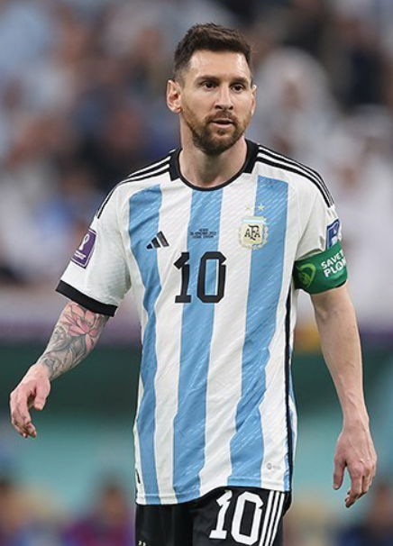

About Him:
Lionel Andrés Messi (born 24 June 1987), also known as Leo Messi, is an Argentine professional footballer who plays as a forward for and captains both Major League Soccer club Inter Miami and the Argentina national team. Widely regarded as one of the greatest players of all time, Messi has won a record seven Ballon d'Or awards and a record six European Golden Shoes, and in 2020 he was named to the Ballon d'Or Dream Team. Until leaving the club in 2021, he had spent his entire professional career with Barcelona, where he won a club-record 34 trophies, including ten La Liga titles, seven Copa del Rey titles and the UEFA Champions League four times. With his country, he won the 2021 Copa América and the 2022 FIFA World Cup. A prolific goalscorer and creative playmaker, Messi holds the records for most goals in La Liga, most hat-tricks in La Liga (36) and the UEFA Champions League (eight), and most assists in La Liga (192) and the Copa América (17). He also has the most international goals by a South American male (104). Messi has scored over 800 senior career goals for club and country, and has the most goals by a player for a single club (672).
"They tell me that all men are equal in God's eyes, this player makes you seriously think about those words." - soccer commentator Ray Hudson.
Early Life:
Messi started playing football as a boy and in 1995 joined the youth team of Newell’s Old Boys (a Rosario-based top-division football club). Messi’s phenomenal skills garnered the attention of prestigious clubs on both sides of the Atlantic. At age 13 Messi and his family relocated to Barcelona, and he began playing for FC Barcelona’s under-14 team. He scored 21 goals in 14 games for the junior team, and he quickly graduated through the higher-level teams until at age 16 he was given his informal debut with FC Barcelona in a friendly match. Fun fact: his contract was signed on a paper napkin.
"When you saw him you would think: this kid can't play ball. He's a dwarf, he's too fragile, too small. But immediately you'd realise that he was born different, that he was a phenomenon and that he was going to be something impressive." - Adrián Roberto Coria, Newell’s Old Boys Youth Coach
Rising Superstar:
In the 2004–05 season Messi, then 17, became the youngest official player and goal scorer in the Spanish La Liga (the country’s highest division of football). Though only 5 feet 7 inches (1.7 metres) tall and weighing 148 pounds (67 kg), he was strong, well-balanced, and versatile on the field. Naturally left-footed, quick, and precise in control of the ball, Messi was a keen pass distributor and could readily thread his way through packed defenses. In 2005 he was granted Spanish citizenship, an honour greeted with mixed feelings by the fiercely Catalan supporters of Barcelona. The next year Messi and Barcelona won the Champions League (the European club championship) title. Messi’s play continued to rapidly improve over the years, and by 2008 he was one of the most dominant players in the world, finishing second to Manchester United’s Cristiano Ronaldo in the voting for the 2008 Ballon d’Or. In early 2009 Messi capped off a spectacular 2008–09 season by helping FC Barcelona capture the club’s first “treble” (winning three major European club titles in one season): the team won the La Liga championship, the Copa del Rey (Spain’s major domestic cup), and the Champions League title. He scored 38 goals in 51 matches during that season, and he bested Ronaldo in the balloting for both the Ballon d’Or and FIFA’s world player of the year by a record margin. During the 2009–10 season Messi scored 34 goals in domestic games as Barcelona repeated as La Liga champions. He earned the Golden Shoe award as Europe’s leading scorer, and he received another Ballon d’Or (the award was known as the FIFA Ballon d’Or in 2010–15).
"We give him the ball and stand back and watch. People often say to me they saw Pele and Maradona play. In the future, I will be able to say I saw Messi play." - Thiago Alcantara
The GOAT:
After Argentina was defeated in the Copa final—the team’s third consecutive finals loss in a major tournament—Messi said that he was quitting the national team, but his short-lived “retirement” lasted less than two months before he announced his return to the Argentine team. At the 2018 World Cup, he helped an overmatched Argentine side reach the knockout stage, where they were eliminated by eventual champion France in their first match. After a third-place finish at the 2019 Copa América, Messi led Argentina to victory in the tournament two years later, and he received the Golden Ball award. His success continued at the 2022 World Cup. There he guided Argentina to the finals, where he scored two goals—and made a penalty kick during the shootout—to help defeat France. Messi won the World Cup’s Golden Ball, becoming the first male player to receive that award twice.
"He was beautiful. He was the point of difference. He has always been the point of difference. Unparalleled, and maybe today there will, of course, always be those who argue, always be those who debate. And the debate could rage on if you like. But as he falls in love with the object in the world that his heart most desired, it is hard to escape the supposition that he has rendered himself today, the greatest of all time." - Peter Dury